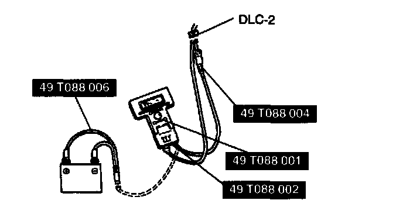

Canister Purge Control Valve: Testing and Inspection
Purge Control Inspection1. Start the engine.
2. Disconnect the vacuum hose between the purge solenoid valve and the charcoal canister.
3. Put a finger to the purge solenoid valve and verify that there is no vacuum applied when the engine is cold.
4. If there is a vacuum, inspect the following.
- Inspect wiring harness between purge solenoid valve and PCM terminal
- Inspect purge solenoid valve
5. Warm up the engine to the normal operating temperature.
6. Stop the engine.

7. Connect the NGS tester to DLC-2.
8. Turn the ignition switch to ON.
9. Select "PID/DATA MONITOR AND RECORD" and press TRIGGER.
10. Select "ECT" and press TRIGGER, then verify that the engine coolant temperature is above 60°C (140°F).
11. Press START.
12. If the NGS tester indicates below 60°C (140°F), inspect the engine coolant temperature sensor.
13. Select "SIMULATION TEST" and press TRIGGER.
14. Select "PRG V" and press TRIGGER.
15. Press START.
16. Increase the duty valve of the purge solenoid valve to 50% and inspect if the operation sound of the valve is heard.
1. If the operation sound is heard, inspect the loose or damaged vacuum hose. (Intake manifold-purge solenoid valve-charcoal canister)
2. If the operation sound is not heard, inspect the purge solenoid valve.